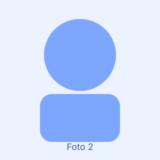

Guilherme Soster
Front-end & EstilizaçãoResponsável pela estrutura HTML das páginas e pelo CSS do projeto.
Este site foi desenvolvido para a disciplina de Desenvolvimento para Web (Web Lab) da UPF, como projeto de curricularização. O conteúdo é baseado nas cartilhas de Segurança da Informação produzidas pela turma de Cybersegurança.
Responsável pela estrutura HTML das páginas e pelo CSS do projeto.

Desenvolveu o gerador de senhas e as funcionalidades de tema e acessibilidade.
Responsável pelo conteúdo das cartilhas sobre phishing e senhas.
Realizou testes de navegação, formulário e revisão geral antes da entrega.